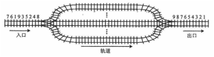
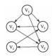
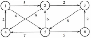
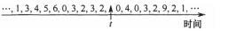
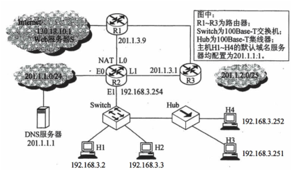
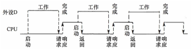
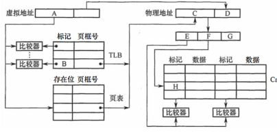
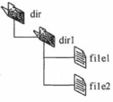

2016 年全国硕士研究生入学统一考试 计算机科学与技术学科联考计算机学科专业基础综合试题
一、单项选择题（1～40 小题，每小题2 分，共80 分。下列每小题给出的四个选项中，只有一项符 合题目要求）
1. 已知表头元素为 c 的单链表在内存中的存储状态如下表所示。
| 地址 | 元素 | 链接地址 |
|---|---|---|
| 1000H | a | 1010H |
| 1004H | b | 100CH |
| 1008H | c | 1000H |
| 100CH | d | NULL |
| 1010H | e | 1004H |
| 1014H |
现将 f 存放于 1014H 处并插入到单链表中，若 f 在逻辑上位于 a 和 e 之间，则 a、e、f 的“链接地址”依次是______。
2. 已知一个带有表头结点的双向循环链表 L，结点结构为 prev、data、next，其中，prev 和 next 分别是指向其直接前驱和直接后继结点的指针。现要删除指针 p 所指的结点，正确的语句序列是______。
3. 设有下图所示的火车车轨，入口到出口之间有n 条轨道，列车的行进方向均为从左至右，列车可 驶入任意一条轨道。现有编号为1～9 的9 列列车，驶入的次序依次是8，4，2，5，3，9，1， 6，7。若期望驶出的次序依次为1～9，则n 至少是______。

4. 有一个 100 阶的三对角矩阵 \displaystyle M，其元素 \displaystyle m_{i,j}\;(1\le i\le100,1\le j\le100) 按行优先依次压缩存入下标从 0 开始的一维数组 \displaystyle N 中。元素 \displaystyle m_{30,30} 在 \displaystyle N 中的下标是______。
5. 若森林F 有15 条边、25 个结点，则F 包含树的个数是______。
6. 下列选项中，不是下图深度优先搜索序列的是______。

7. 若将 \displaystyle n 个顶点、\displaystyle e 条弧的有向图采用邻接表存储，则拓扑排序算法的时间复杂度是______。
\displaystyle O(n)\displaystyle O(n+e)\displaystyle O(n^2)\displaystyle O(ne)8. 使用迪杰斯特拉(Dijkstra)算法求下图中从顶点1 到其他各顶点的最短路径，依次得到的各最短路 径的目标顶点是______。

9. 在有 \displaystyle n\;(n>1000) 个元素的升序数组 A 中查找关键字 x。查找算法的伪代码如下所示。
k=0;
while (k<n 且 A[k]<x) k=k+3;
if (k<n 且 A[k]==x) 查找成功;
else if (k-1<n 且 A[k-1]==x) 查找成功;
else if (k-2<n 且 A[k-2]==x) 查找成功;
else 查找失败;本算法与折半查找算法相比，有可能具有更少比较次数的情形是______。
10.B+树不同于B 树的特点之一是______。
11.对10TB 的数据文件进行排序，应使用的方法是______。
12.将高级语言源程序转换为机器级目标代码文件的程序是______。
13. 有如下 C 语言程序段：
short si = -32767;
unsigned short usi = si;执行上述两条语句后，usi 的值为______。
14.计算机字长为32 位，按字节编址，采用小端（Little Endian）方式存放数据。假定有一个double 型变量，其机器数表示为1122 3344 5566 7788H，存放在0000 8040H 开始的连续存储单元中， 则存储单元0000 8046H 中存放的是______。
15. 有如下 C 语言程序段：
for (k=0; k<1000; k++)
a[k] = a[k]+32若数组 a 及变量 k 均为 int 型，int 型数据占 4B，数据 Cache 采用直接映射方式，数据区大小为 1KB、块大小为 16B，该程序段执行前 Cache 为空，则该程序段执行过程中访问数组 a 的 Cache 缺失率约为______。
16.某存储器容量为64KB，按字节编址，地址4000H～5FFFH 为ROM 区，其余为RAM 区。若采 用8K×4 位的SRAM 芯片进行设计，则需要该芯片的数量是______。
17. 某指令格式如下所示。
| OP | M | I | D |
其中 M 为寻址方式，I 为变址寄存器编号，D 为形式地址。若采用先变址后间址的寻址方式，则操作数的有效地址是______。
18.某计算机主存空间为4GB，字长为32 位，按字节编址，采用32 位字长指令字格式。若指令按 字边界对齐存放，则程序计数器（PC）和指令寄存器（IR）的位数至少分别是______。
19. 在无转发机制的五段基本流水线（取指、译码/读寄存器、运算、访/写回寄存器）中，下列指令序列存在数据冒险的指令对是______。
I1: add R1, R2, R3; (R2)+(R3)→R1
I2: add R5, R2, R4; (R2)+(R4)→R5
I3: add R4, R5, R3; (R5)+(R3)→R4
I4: add R5, R2, R6; (R2)+(R6)→R520.单周期处理器中所有指令的指令周期为一个时钟周期。下列关于单周期处理器的叙述中，错误的 是______。
21.下列关于总线设计的叙述中，错误的是______。
22.异常是指令执行过程中在处理器内部发生的特殊事件，中断是来自处理器外部的请求事件。下列 关于中断或异常情况的叙述中，错误的是______。
23.下列关于批处理系统的叙述中，正确的是 I. 批处理系统允许多个用户与计算机直接交互 II. 批处理系统分为单道批处理系统和多道批处理系统 III. 中断技术使得多道批处理系统和I/O 设备可与CPU 并行工作
24.某单CPU 系统中有输入和输出设备各1 台，现有3 个并发执行的作业，每个作业的输入、计算 和输出时间均分别为2ms、3ms 和4ms，且都按输入、计算和输出的顺序执行，则执行完3 个作 业需要的时间最少是______。
25.系统中有3 个不同的临界资源R1, R2和R3，被4 个进程p1, p2, p3及p4共享。各进程对资源的需求 为：p1申请R1和R2，p2申请R2和R3，p3申请R1和R3，p4申请R2。若系统出现死锁，则处于死锁 状态的进程数至少是______。
26.某系统采用改进型CLOCK 置换算法，页表项中字段A 为访问位，M 为修改位。A = 0 表示页最 近没有被访问，A = 1 表示页最近被访问过。M=0 表示页没有被修改过，M=1 表示页被修改过。 按(A, M)所有可能的取值，将页分为四类：(0, 0), (1, 0), (0, 1)和(1, 1)，则该算法淘汰页的次序 为______。
27. 使用 TSL（Test and Set Lock）指令实现进程互斥的伪代码如下所示。
do {
...
while (TSL(&lock)); critical section;
lock=FALSE
...
} while (TRUE)下列与该实现机制相关的叙述中，正确的是______。
28. 某进程的段表内容如下所示。
| 段号 | 段长 | 内存起始地址 | 权限 | 状态 |
|---|---|---|---|---|
| 0 | 100 | 6000 | 只读 | 在内存 |
| 1 | 200 | … | 读写 | 不在内存 |
| 2 | 300 | 4000 | 读写 | 在内存 |
当访问段号为 2、段内地址为 400 的逻辑地址时，进行地址转换的结果是______。
29.某进程访问页面的序列如下所示。 若工作集的窗口大小为6，则在t 时刻的工作集为______。

30. 进程 \displaystyle P_1 和 \displaystyle P_2 均包含并发执行的线程，部分伪代码描述如下所示。
// 进程 P1
int x = 0;
Thread1() { int a; a=1; x += 1; }
Thread2() { int a; a=2; x += 2; }// 进程 P2
int x = 0;
Thread3() { int a; a=x; x += 3; }
Thread4() { int b
b=x; x += 4; }下列选项中，需要互斥执行的操作是______。
31.下列关于SPOOLing 技术的叙述中，错误的是______。
32.下列关于管程的叙述中，错误的是______。
33.在OSI 参考模型中，RI、Switch、Hub 实现的最高功能层分别是______。
34. 若连接和 R3 链路的频率带宽为 8kHz，信噪比为 30dB，该链路实际数据传输速率约为理论最大数据传输速率的 50%。则该链路的实际数据传输速率约是______。

35.若主机H2 向主机H4 发送1 个数据帧，主机H4 向主机H2 立即发送一个确认帧，则除H4 外， 从物理层上能够收到该确认帧的主机还有 。
36. 若 Hub 再生比特流过程中，会产生 \displaystyle 1.535\mu\mathrm{s} 延时，信号传播速度为 \displaystyle 200\mathrm{m}/\mu\mathrm{s}，不考虑以太网帧的前导码，则 H3 与 H4 之间理论上可以相距的最远距离是______。
37. 假设 R1、R2、R3 采用 RIP 协议交换路由信息，且均已收敛。若 R3 检测到网络 201.1.2.0/25 不可达，并向通告一次新的距离向量，则 R2 更新后，其到达该网络的距离是______。
38.假设连接R1、R2 和R3 之间的点对点链路使用201.1.3.x/30 地址，当H3 访问Web 服务器S 时，R2 转发出去的封装HTTP 请求报文的IP 分组的源IP 地址和目的IP 地址分别是______。
39.若H1 与H2 的默认网关和子网掩码均分别配置为192.168.3.1 和255.255.255.128，H3 和H4 的默 认网关和子网掩码均分别配置为192.168.3.254 和255.255.255.128，则下列现象中可能发生的 是______。
40.假设所有域名服务器均采用迭代查询方式进行域名解析。当H4 访问规范域名为 www.abc.xyz.com 的网站时，域名服务器201.1.1.1 完成该域名解析过程中，可能发出DNS 查询 的最少和最多次数分别是______。
二、综合应用题（第 41～47 小题，共 70 分）
41.（9 分）假设题33～41 图中的H3 访问Web 服务器S 时，S 为新建的TCP 连接分配了20KB（K = 1024）的接收缓存，最大段长MSS=1KB，平均往返时间RTT = 200ms。H3 建立连接时的初始 序号为100，且持续以MSS 大小的段向S 发送数据，拥塞窗口初始阈值为32KB；S 对收到的每 个段进行确认，并通告新的接收窗口。假定TCP 连接建立完成后，S 端的TCP 接收缓存仅有数 据存入而无数据取出。请回答下列问题。 （1）在TCP 连接建立过程中，H3 收到的S 发送过来的第二次握手TCP 段的SYN 和ACK 标志 位的值分别是多少？确认序号是多少？ （2）H3 收到的第8 个确认段所通告的接收窗口是多少？此时H3 的拥塞窗口变为多少？H3 的 发送窗口变为多少？ （3）当H3 的发送窗口等于0 时，下一个待发送的数据段序号是多少？H3 从发送第1 个数据段 到发送窗口等于0 时刻为止，平均数据传输速率是多少（忽略段的传输延时）？ （4）若H3 与S 之间通信己经结束，在t 时刻H3 请求断开该连接，则从t 时刻起，S 释放该连 接的最短时间是多少？
42. （8 分）如果一棵非空 \displaystyle k\;(k\ge2) 叉树 T 中每个非叶结点都有 \displaystyle k 个孩子，则称 T 为正则 \displaystyle k 叉树。请回答下列问题并给出推导过程。（1）若 T 有 \displaystyle m 个非叶结点，则 T 中的叶结点有多少个？（2）若 T 的高度为 \displaystyle h（单结点的树 \displaystyle h=1），则 T 的结点数最多为多少个？最少为多少个？
43. （15 分）已知由 \displaystyle n\;(n\ge2) 个正整数构成的集合 \displaystyle A=\{a_k\mid0\le k<n\}，将其划分为两个不相交的子集 \displaystyle A_1 和 \displaystyle A_2，元素个数分别是 \displaystyle n_1 和 \displaystyle n_2，\displaystyle A_1 和 \displaystyle A_2 中元素之和分别为 \displaystyle S_1 和 \displaystyle S_2。设计一个尽可能高效的划分算法，满足 \displaystyle |n_1-n_2| 最小且 \displaystyle |S_1-S_2| 最大。要求：（1）给出算法的基本设计思想。（2）根据设计思想，采用 C 或 C++ 语言描述算法，关键之处给出注释。（3）说明你所设计算法的平均时间复杂度和空间复杂度。
44.（9 分）假定CPU 主频为50MHz，CPI 为4。设备D 采用异步串行通信方式向主机传送7 位 ASCII 字符，通信规程中有1 位奇校验位和1 位停止位，从D 接收启动命令到字符送入I/O 端口 需要0.5ms。请回答下列问题，要求说明理由。 （1）每传送一个字符，在异步串行通信线上共需传输多少位？在设备D 持续工作过程中，每秒 钟最多可向I/O 端口送入多少个字符？ （2）设备D 采用中断方式进行输入/输出，示意图如下。 I/O 端口每收到一个字符申请一次中断，中断响应需10 个时钟周期，中断服务程序共有20 条 指令，其中第15 条指令启动D 工作。若CPU 需从D 读取1000 个字符，则完成这一任务所需时 间大约是多少个时钟周期？CPU 用于完成这一任务的时间大约是多少个时钟周期？在中断响应阶 段CPU 进行了哪些操作？

45.（14 分）某计算机采用页式虚拟存储管理方式，按字节编址，虚拟地址为32 位，物理地址为24 位，页大小为8KB；TLB 采用全相联映射：Cache 数据区大小为64KB，按2 路组相联方式组 织，主存块大小为64B。存储访问过程的示意图如下。 请回答下列问题。 （1）图中字段A～G 的位数各是多少？TLB 标记字段B 中存放的是什么信息？ （2）将块号为4099 的主存块装入到Cache 中时，所映射的Cache 组号是多少？对应的H 字段内容是什么？ （3）Cache 缺失处理的时间开销大还是缺页处理的时间开销大？为什么？ （4）为什么cache 可以采用直写（Write Through）策略，而修改页面内容时总是采用回写 （Write Back）策略。

46.（6 分）某进程调度程序采用基于优先数（priority）的调度策略，即选择优先数最小的进程运 行，进程创建时由用户指定一个nice 作为静态优先数。为了动态调整优先数，引入运行时间 cpuTime 和等待时间waitTime，初值均为0。进程处于执行态时，cpuTime 定时加1，且 waitTime 置0；进程处于就绪态时，cpuTime 置0，waitTime 定时加1。请回答下列问题。 （1）若调度程序只将nice 的值作为进程的优先数，即priority = nice，则可能会出现饥饿现象， 为什么？ （2）使用nice、cpuTime 和waitTime 设计一种动态优先数计算方法，以避免产生饥饿现象，并 说明waitTime 的作用。
47. （9 分）磁盘文件系统使用链接分配方式组织文件，簇大小为 4KB。目录文件的每个目录项包括文件名和文件的第一个簇号，其他簇号存放在文件分配表 FAT 中。（1）假定目录树如下图所示，各文件占用的簇号及顺序如右表所示，其中 dir、dir1 是目录，file1、file2 是用户文件。请给出所有目录文件的内容。

| 文件名 | 簇号 |
|---|---|
| dir | 1 |
| dir1 | 48 |
| file1 | 100、106、108 |
| file2 | 200、201、202 |
（2）若 FAT 的每个表项仅存放簇号，占 2 字节，则 FAT 的最大长度为多少字节？该文件系统支持的文件长度最大是多少？（3）系统通过目录文件和 FAT 实现对文件的按名存取，说明 file1 的 106、108 两个簇号分别存放在 FAT 的哪个表项中。（4）假设仅 FAT 和 dir 目录文件已读入内存，若需将文件 dir/dir1/file 的第 50 个字节读入内存，则要访问哪几个簇？